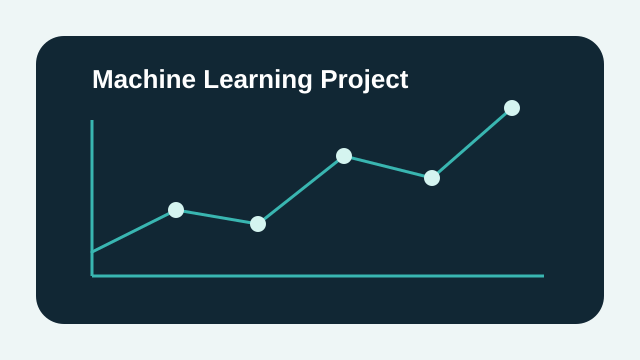
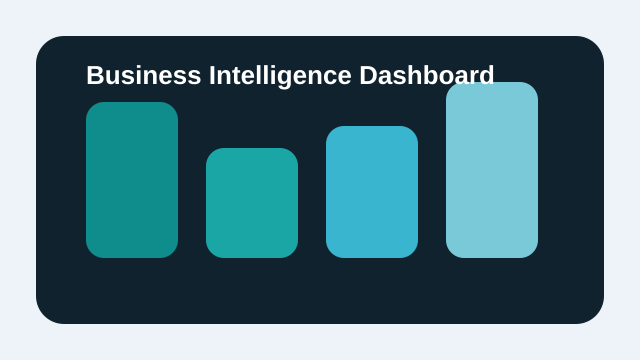
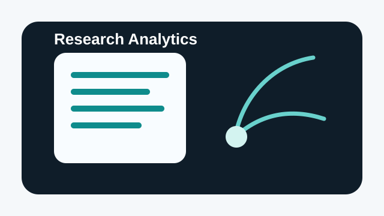

DS
Data Science
Model development, feature engineering, exploratory analysis, experimentation, and evidence-based decision support.
Evidence-driven analytics and applied research
Data Scientist | Researcher | Analytics & AI Professional
I build data-informed systems, research programs, and analytical products that help organizations make stronger decisions. My work brings together data science, applied statistics, business intelligence, survey research, and technical project leadership to solve real-world problems with clarity and rigor.
Professional Focus
Core capabilities
This portfolio is designed for analytics, research, BI, machine learning, and technical leadership opportunities where rigorous thinking and practical execution matter equally.
Model development, feature engineering, exploratory analysis, experimentation, and evidence-based decision support.
Survey design, market assessment, field research, methodology planning, and publication-ready analytical outputs.
Executive dashboards, KPI systems, reporting automation, and data storytelling for operational and strategic teams.
Cross-functional coordination, quality assurance, system design, CRM/platform work, and analytical project delivery.
Selected work

Machine Learning
Designed a predictive pipeline to support planning, prioritization, and operational risk awareness using historical and behavioral data.

Business Intelligence
Built a leadership-facing reporting environment combining KPIs, quality indicators, and operational insights across multiple teams.

Research Analytics
Led end-to-end analytics for a structured study covering data collection, weighting, inference, segmentation, and stakeholder reporting.
Research profile
Publication
Placeholder citation for a methods-oriented contribution focused on reliability, workflow governance, and research quality assurance.
Working Paper
Placeholder abstract describing how forecasting and operational intelligence can strengthen planning and resource allocation.
Report
Placeholder report entry demonstrating structured field data collection, segmentation, and executive-level synthesis.
Experience snapshot
Led analytics standards, reporting quality, and evidence workflows across teams and programs.
Managed study design, operational research planning, and stakeholder reporting for decision support.
Oversaw systems, digital platforms, CRM-related coordination, and technical implementation support.
Skills overview
Collaboration and opportunities
If your team is building evidence-driven programs, analytics products, machine learning solutions, or research-backed decision systems, I would be glad to connect.